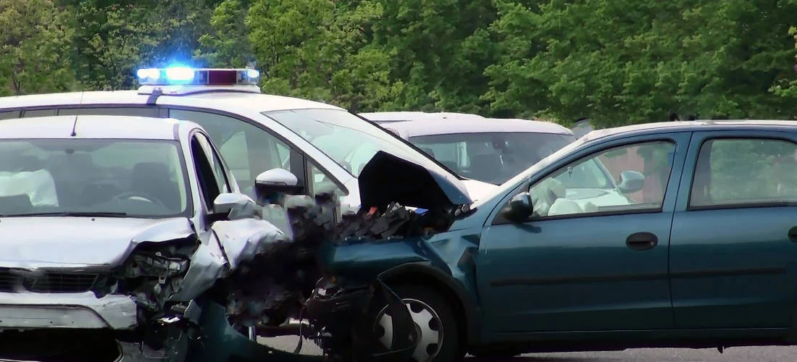
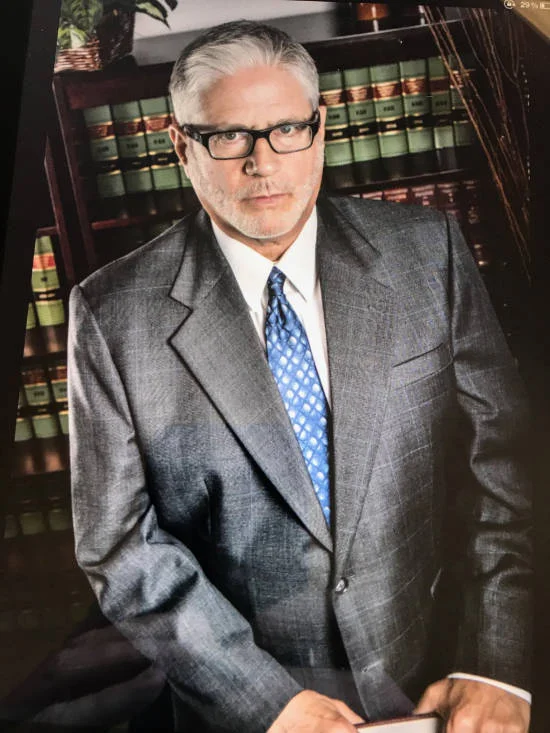

A Proven Car Accident Lawyer – Call Me, Mark A. Hammer 24/7. (800) 800-529-6275

Mark A. Hammer & Associates, Inc. is a proven personal injury law firm assisting injury victims throughout Washington State. Accident victims can rely on our lawyers to help them recover for injuries sustained in automobile, motorcycle, bicycle, pedestrian accidents, semi-truck accidents, and other personal injury claims. Our attorneys have the knowledge and skill to help victims injured in any traffic related accident.
Can I recover for my injury? Whether you can recover for your injury depends heavily on the facts and circumstances of your case. For victims of motor vehicle accidents, it is a good idea to consult with an experienced accident attorney even if your injury seems minor. Some victims are unsure whether their immigrant status affects their right to recovery, a point discussed in our FAQs for immigrants. An attorney can better evaluate your potential for recovery after speaking with you personally.
How soon after my injury should I consult a lawyer? It is important to contact an attorney as soon as possible after sustaining an injury. Injury claims are governed by what is called a “Statute of Limitations.” This limits the time in which an accident victim can sue for his or her injury. It is a good idea to consult an attorney right away to learn how the Statute of Limitations affects your injury claim.
Will an attorney take my case? Before an attorney will agree to take a case, the attorney will want to learn about the automobile accident, and the nature and extent of your injury. The attorney’s decision will be based in large part on that conversation. Whether your injury is “minor” or “severe” is only one of several considerations involved in the decision. At Mark A. Hammer & Associates, Inc. we consider the free initial consultations a great way to learn more about your case.
Comparative negligence? Washington follows what is called pure comparative negligence. Meaning recovery for an injury can be reduced by an amount in proportion to a plaintiff’s relative fault in causing the accident in which the plaintiff was injured. To illustrate, if a plaintiff is awarded $20,000 by a jury for an injury, but the jury finds the plaintiff is 50% at fault for causing the accident, the plaintiff will only recover half of the jury award, or $10,000.
Things move quickly in the moments following an accident, so it is important to have a trusted accident attorney at your side to protect your interests. At Mark A. Hammer & Associates, Inc. we have helped victims throughout Washington State recover for injuries suffered in auto accidents for four decades. We can help you recover the financial compensation you deserve for your injury.
Whether your injury is short term or permanently disabling, an experienced accident attorney at Mark A. Hammer & Associates, Inc. will help you recover the compensation you deserve. Our attorneys have helped accident victims throughout Washington State recover for their injuries for 45 years. We regularly represent accident victims with severe spinal cord injuries, traumatic brain injuries, fractures, burns, soft tissue injuries, and other serious injuries. With Mark A. Hammer & Associates, Inc., victims injured in automobile and motorcycle accidents can depend on our experienced lawyers to handle their case with the appropriate care and attention it requires.
Auto Injury Attorney – Local and Experienced
At Mark A. Hammer & Associates, Inc. we endeavor to provide every client with quality, meaningful representation. Clients who contact our office for a free consultation are directly connected with an attorney and founder Mark A. Hammer. The consultation is conducted right away, on the spot. For clients who do not speak English, our office is fluent in Spanish, Portuguese, Mandarin, Cantonese, and Vietnamese.
Our car accident lawyers will ensure your rights are protected, respected, & awarded appropriately.
If you or a loved one have been injured in a vehicle accident our car accident lawyers will help you recover the compensation you deserve. We are experienced and expert accident lawyers.
Our car accident lawyers have 45+ years of experience, the reputation and the proven results to win successful injury claims in even the most complex cases. We fight to win and have the resources to stand up to insurers or large corporations. We will demand the comprehensive, long-term compensation you need.
A rear-end collision is an automobile accident wherein one car crashes into the backside of another car. Rear-end collisions are notorious for leaving accident victims with painful head and neck injuries, among other types of injuries. Some rear-end collisions lead to rollovers and other complications. What seems to frustrate accident victims the most is that there was very little they could do to avoid the rear-end collision. They were at the mercy of the driver behind them.
Victims injured in rear-end collisions should speak with an experienced car crash attorney. It is important to have an experienced auto accident lawyers to look out for your interests and ensure that you receive the compensation you are entitled to. Mark A. Hammer & Associates, Inc. has helped accident victims hurt in rear-end collisions throughout western Washington and Puget Sound for 40 years.
Thanks for a very fine settlement! Victoria A., Port Orchard
Mark helped a family member of mine in a serious injury case. It was a challenge to fight the insurance to get what was deserved, but Mark and his staff came through. Lory J. L., Mill Creek
I was very happy with Mark’s service! I recommended my friend to Mr. Hammer when he had a car accident.Terrence, Seattle
When I had my second accident with a truck I went to Mark. He did a great job on my first case and I’ve also recommended a friend. Mohamed A., Seattle
I was pleased with Mr. Hammer getting what I wanted. It was not an easy case but he came through for me in the end. I’ll recommend him to others I know who’ve had vehicle accidents. Luis G., Everett

The dust barely comes to rest after an automobile accident before insurance companies and defense attorneys start making settlement offers to accident victims.
While insurance companies and their attorneys know you are entitled to compensation for your injury, and have an idea how much your claim is worth, they rarely offer you the full and fair amount of recovery you deserve. Many accident victims fall for these settlement tactics, but our experienced attorneys do not.
We know the techniques insurance companies and defense attorneys use to undervalue your claim. Our lawyers will make sure you do not settle for less than you deserve.
Representing Victims with TBI, Spinal Cord, and Other Injuries. Whether your injury is short term or permanently disabling, an experienced accident attorney at Mark A. Hammer & Associates, Inc. will help you recover the compensation you deserve.
Our attorneys have helped accident victims throughout Washington State recover for their injuries for 45 years. We regularly represent accident victims with severe spinal cord injuries, traumatic brain injuries, fractures, burns, soft tissue injuries, and other serious injuries.
Most rear-end collisions occur when one automobile is following another at an unsafe distance, known as tailgating, and does not have enough time or space to avoid colliding. An automobile traveling at only 25 miles per hour requires at least 85 feet of roadway to come to a complete stop in an emergency situation. As an automobile’s speed increases, the distance needed to stop does too. Most federal and state agencies recommend that drivers maintain no less than 3 seconds worth of distance between themselves and the vehicle ahead. This is meant to help drivers know how much space is enough to avoid a rear-end collision with the car ahead. Tailgating is a significant cause of fuel fires in automobile accidents.
Another common cause of rear-end collisions is the inattentive driver. An inattentive driver is one whose attention is focused on anything but the road ahead. Typically, the distracted driver will be approaching congested traffic ahead, or an intersection stopped by a traffic light or a stop sign. By the time the distracted driver looks back to the road, it is too late and the driver slams into the vehicle ahead. Many states have taken steps to prevent rear-end collisions by distracted drivers by prohibiting certain cellphone use while driving.